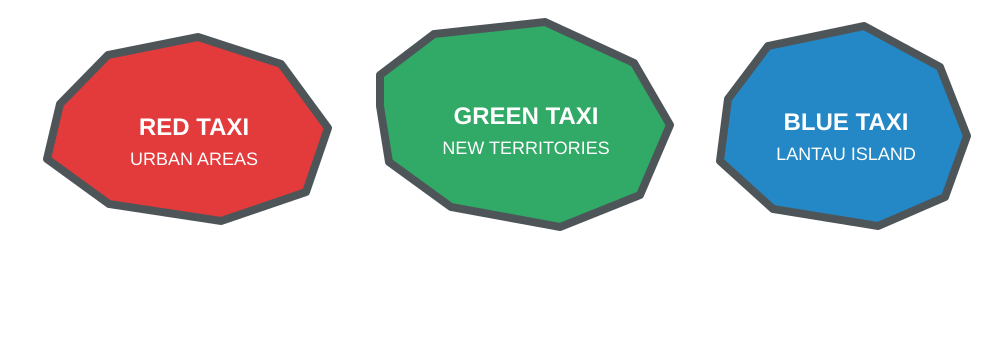
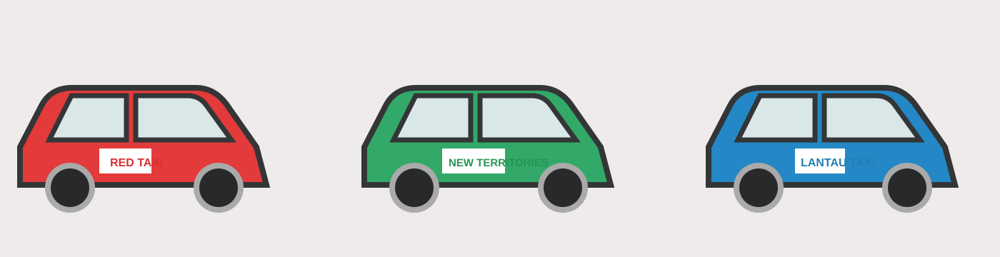

Taxis — The Real Lifesavers
Readily available and affordable compared to Western standards, taxis are a lifesaver when you're carrying heavy luggage or heading home late after a night out. Red taxis operate in urban areas, green taxis in the New Territories, and blue taxis on Lantau Island.

